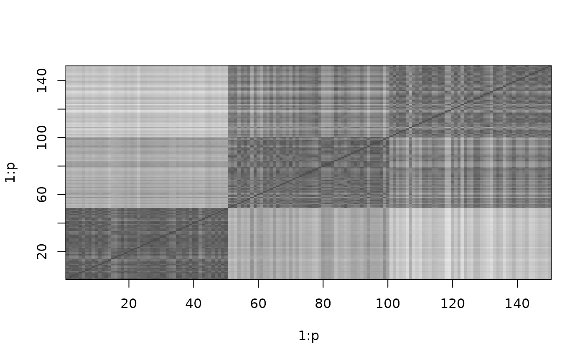

Constructor to create an instance of a symmetric traveling salesperson problem (TSP) and some auxiliary methods.
Usage
TSP(x, labels = NULL, method = NULL)
as.TSP(x)
# S3 method for class 'dist'
as.TSP(x)
# S3 method for class 'matrix'
as.TSP(x)
# S3 method for class 'TSP'
as.dist(m, ...)
# S3 method for class 'TSP'
print(x, ...)
n_of_cities(x)
# S3 method for class 'TSP'
n_of_cities(x)
# S3 method for class 'TSP'
labels(object, ...)
# S3 method for class 'TSP'
image(x, order, col = gray.colors(64), ...)Arguments
- x, object
an object (currently
distor a symmetric matrix) to be converted into aTSPor, for the methods, an object of classTSP.- labels
optional city labels. If not given, labels are taken from
x.- method
optional name of the distance metric. If
xis adistobject, then the method is taken from that object.- m
a TSP object to be converted to a dist object.
- ...
further arguments are passed on.
- order
order of cities for the image as an integer vector or an object of class TOUR.
- col
color scheme for image.
Value
TSP()returnsxas an object of classTSP.n_of_cities()returns the number of cities inx.labels()returns a vector with the names of the cities inx.
Details
Objects of class TSP are internally represented as dist
objects (use as.dist() to get the dist object).
Impermissible paths can be set to a distance of +Inf. NAs are not allowed,
and -Inf will allow the algorithm to find only an admissible tour, not the best one.
See also
Other TSP:
ATSP(),
Concorde,
ETSP(),
TSPLIB,
insert_dummy(),
reformulate_ATSP_as_TSP(),
solve_TSP()
Examples
data("iris")
d <- dist(iris[-5])
## create a TSP
tsp <- TSP(d)
tsp
#> object of class ‘TSP’
#> 150 cities (distance ‘euclidean’)
## use some methods
n_of_cities(tsp)
#> [1] 150
labels(tsp)
#> [1] 1 2 3 4 5 6 7 8 9 10 11 12 13 14 15 16 17 18
#> [19] 19 20 21 22 23 24 25 26 27 28 29 30 31 32 33 34 35 36
#> [37] 37 38 39 40 41 42 43 44 45 46 47 48 49 50 51 52 53 54
#> [55] 55 56 57 58 59 60 61 62 63 64 65 66 67 68 69 70 71 72
#> [73] 73 74 75 76 77 78 79 80 81 82 83 84 85 86 87 88 89 90
#> [91] 91 92 93 94 95 96 97 98 99 100 101 102 103 104 105 106 107 108
#> [109] 109 110 111 112 113 114 115 116 117 118 119 120 121 122 123 124 125 126
#> [127] 127 128 129 130 131 132 133 134 135 136 137 138 139 140 141 142 143 144
#> [145] 145 146 147 148 149 150
image(tsp)
